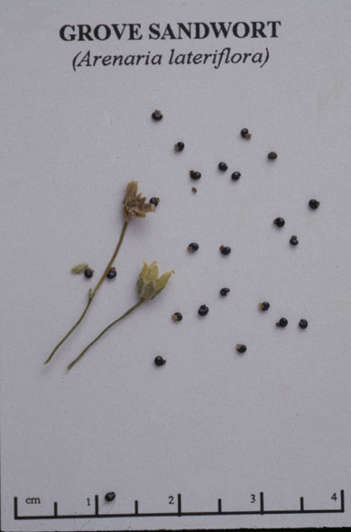
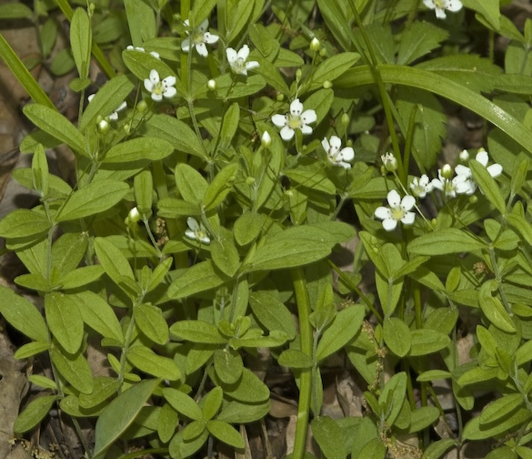

Arenaria Lateriflora
Family: Caryophyllaceae
Wood Sandwort
Swink/Wilhelm # 8

 Click to view larger photo
Click to view larger photo

FLOWERING: May - June
SEED TIMING:
HABITAT: Dry woodland edges and open savannas
DIAGNOSTIC FEATURES: Up to 8 inches. A delicate, spreading plant. Looks much like chickweed but does not crowd other plants - a loner. Stems erect or ascending. Opposite leaves thin, oval or oblong, 1/2 to 1 inch long.
TO PICK: Seed capsule is oval, divided into 3 valves. Turns light-tan when ripe.